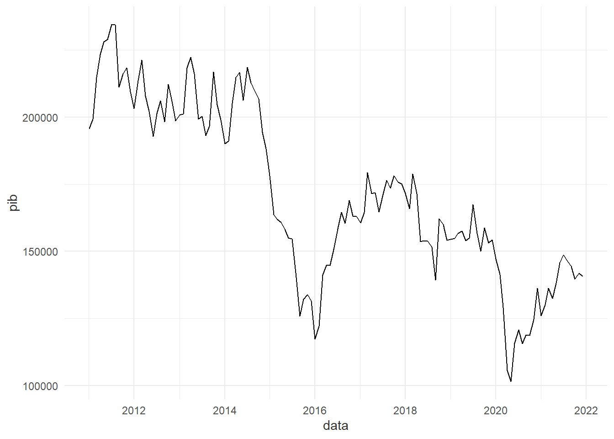

1 Introdução
1.1 Referenciais Teóricos
O presente cenário mundial acerca de mortes e lesões relacionadas à sinistros de trânsito posam sérios desafios à saúde pública global, e as tendências evidenciadas pelos dados atuais indicam que esta realidade deve continuar a se manter pelo futuro próximo (World Health Organization 2018). Sendo uma das causas de mortes mais comuns no mundo, as ocorrências de sinistros de trânsito afetam principalmente pedestres, ciclistas e motociclistas, além de induzir severos danos materiais, tanto em questão de propriedade particular quanto pública. Isto estimula países a buscarem métodos estimativos sobre os efeitos sociais, econômicos e epidemiológicos da taxa de mortes no trânsito e como se traduzem em custos e perdas na produtividade da sociedade em geral (Rodríguez, Jattin, e Soracipa 2020).
A segurança viária pode ser um valioso indeicar ao estado de desenvolvimento de uma região, visto que é uma característica do avanço da mobilidade urbana. Entende-se que as mortes no trânsito dependem de diversos fatores estruturais, socioeconômicos e ambientais do contexto urbano (Zhong-xiang et al. 2014), o que implica que elevadas taxas de sinistros viários colaboram no diagnóstico de problemas da segurança pública em geral, despertando o debate político sobre a regulamentação das normas viárias e apontando a carência dos sistemas da união em combater estes eventos.
Apesar da crescente adesão por itens de segurança veicular, os sinistros de trânsito permanecem como um problema de saúde pública, já que fazem parte de um agravo que repercute por toda a sociedade (Andrade e Antunes 2019), sendo a oitava maior causa de óbitos em todas as faixas etárias e a principal entre indivíduos de 5 a 29 anos (World Health Organization 2018). Como previsto por modelos estatísticos prévios à 2020 (Blumenberg et al. 2018), o Brasil apresentou baixo desempenho em cumprir a meta estabelecida pela Primeira Década de Ações pela Segurança no Trânsito. Neste cenário, o Plano Nacional de Redução de Mortes e Lesões no Trânsito (PNATRANS) foi desenvolvido para guiar as ações pela mobilidade segura nacional durante o período da Segunda Década de Ação pela Segurança no Trânsito (Ministério da Infraestrutura 2018), na intenção de aprimorar o desempenho da segurança viária em relação a década passada, se alinhando aos Objetivos de Desenvolvimento Sustentável estabelecidos pela Agenda 2030 da Organização das Nações Unidas (ONU). Para atingir tais metas, o Art. 3º da Resolução Contran Nº 870 relata que o PNATRANS se apoia em seis principais pilares: gestão da segurança no trânsito, vias seguras, segurança veicular, educação para o trânsito, atendimento às vítimas, e normalização e fiscalização (Conselho Nacional de Trânsito 2018).
A busca pela fundamentação técnica para a proposição de políticas públicas a respeito da mobilidade segura fomenta o estudo de diversas categorias de modelos preditivos para a mortalidade no trânsito, tanto para estimar o número de ocorrências quanto para avaliar a influência das variáveis consideradas sobre a ocorrência de sinistros fatais. Em geral, a literatura pertinente apresenta diversos meios distintos para alcançar estes modelos de melhor ajuste: Modelos lineares multivariados foram ajustados para extrair tendências sobre os critérios aferidos (Blumenberg et al. 2018; Cai, Zhu, e Yan 2015), assim como modelos preditivos baseados em cadeia de Markov (Seneta 1996; Jin, Zheng, e Geng 2020). Outras abordagens utilizam técnicas de análise de séries temporais, utilizando métodos autoregressivos como o ARIMA - Modelo Auto-Regressivo Integrado de Médias Móveis (Al-Ghamdi 1995) e redes neurais artificiais (Jafari et al. 2015).
1.2 Objetivos
Considerando o presente cenário, este estudo tem como objetivo elaborar um modelo de aprendizado de máquina para a previsão de mortes no trânsito em âmbito nacional no Brasil, investigando dados socioeconômicos e estrurais para explorar diversos tipos de tratamentos e análises estatísticas para criar perspectivas futuras a cerca do cenário brasileiro da segurança viária. Posto isso, o projeto também visa avaliar a qualidade de cada tipo de modelo experimentado em expressar o fenômeno real dos óbitos no trânsito, assim como elucidar a influência e relevância de cada variável considerada na construção do dispositivo preditivo criado com a incidência destes eventos.
2 Metodologia
2.1 Coleta de dados
A coleta de dados foi efetuada considerando as principais variáveis teoricamente relacionadas à mortalidade em trânsito disponíveis para o pública, baseando a escolha de cada grandeza na literatura previamente revisada. Estes dados são reunidos e pré-processados para a formação de conjuntos de dados específicos para cada método de modelagem, variando com a resolução temporal temporal de cada abordagem (anual, trimestral e mensal).
Dito isto, investigam-se diversas bases e fornecedores distintos a fim de compilar estas informações e extrair dados para uma análise preliminar, anterior a modelagem. Entre as fontes contempladas estão:
PIB (Produto Interno Bruto) anual, fornecido pelo Sistema IBGE de Recuperação Automática (SIDRA) do IBGE (Instituto Brasileiro de Geografia e Estatística 2023), coletado em milhões de reais;
PIB mensal, fornecido pelo Sistema Gerenciador de Séries Temporais do Banco Central (Banco Central do Brasil 2023), coletado em dólares;
População nacional residente, fornecida pelo sistema DataSUS do Ministério da Saúde (Ministério da Saúde 2023b), obtida pelo TABNET;
Sinistros em rodovias federais, fornecidos pelo portal de dados abertos da PRF (Polícia Rodoviária Federal 2023);
Condutores habilitados, fornecidos pelo portal de estatísticas da Secretaria Nacional de Trânsito (Senatran) do Registro Nacional de Condutores Habiltados (RENACH) (Ministério dos Transportes 2023b);
Frota veicular, fornecida pelo portal de estatísticas da Senatran do Registro Nacional de Veículos Automotores (RENAVAM) (Ministério dos Transportes 2023a);
Óbitos em trânsito, fornecidos pelo Sistema de Informação de Mortalidade (SIM) do DataSUS (Ministério da Saúde 2023a), obtidos pela biblioteca
microdatasus(Saldanha 2023) da linguagem de programação estatística R.
Vale ressaltar que nem todos os atributos tem disponibilidade em todas as unidades, por isso não foram inclusas no processo de criação de certos modelos. As bases de condutores habilitados e população residente, por exemplo, são unicamente anuais, impossibilitando sua utilização no modo trimestral e mensal.
2.2 Modelos
2.2.1 Escalas de tempo
Em razão da escassa disponibilidade de dados temporais, os modelos confeccionados em geral contemplam uma janela de tempo de 2011 até a atualidade, sendo as prinpais unidades temporais estudadas a anual, a trimestral e a mensal. Ao criar modelos de série temporal, deve-se notar que a disponibilidade e o intervalo temporal em que os modelos operam tem uma relação direta com a capacidade de um modelo de aprender com os dados e conseguir expressá-los futuramente, impactando no desempenho do modelo.
Modelos treinados em âmbito mensal conseguem emitir previsões para cada mês, mas perdem precisão quanto mais adiante prevém, enquanto modelos anuais podem predizer com alto desempenho os valores de anos posteriores, mas possuem baixa longevidade e não são capazes de prever meses ou trimestres. Assim, estas diversas abordagens são aferidas a fim de comparar os desempenhos e utilidades de cada método entre si.
2.2.2 Série Temporal x Determinístico
É importante ressaltar que há mais de uma maneira de se entender as relações entre os dados e, portanto, mais de uma maneira de interpretá-los em questão do processo de modelagem estatística do problema. Neste sentido, as metodologias de análise propostas a partir da observação dos dados disponíveis implicam duas possíveis linhas de racioncínio no que se diz a análise estatística: a análise de série temporal e a análise de regressão.
A análise de série temporal se apoia no conceito de séries temporais, sendo um conjunto de dados de alguma grandeza ordenados em sequência cronológica, para criar um modelo generalista visando prever as observações futuras baseado nas observações passadas. Este tipo de modelagem assuma que o que ocorre no momento atual, neste caso óbitos no trânsito, dependeria, ou possui relação, com o que ocorreu anteriormente. Este tipo de modelo também leva em consideração o comportamento ao longo do tempo, como sazonalidade, tendência e heteroscedasticidade, e é altamente dependente da autocorrelação.
Já a análise de regressão tem como base a criação de um modelo de variáveis preditadas que dependem de variáveis preditivas ou preditoras, criando uma função generalista que expressa a relação destes tipos de variáveis entre si. Diferentemente da análise temporal, a regessão independe da sequência cronológica dos fatos, mas é diretamente afetada pela correlação das variáveis independentes com a variável dependente que se deseja prever.
À vista disso, o processo de modelagem pretende essencialmente englobar estas duas principais metodologias de análise de dados, criando modelos de ambas as categorias. Conforme o embasamente teórico acerca da segurança viária, estes modelagens são possíveis pelo fato de que o fenômeno das mortes em trânsito possuem tanto uma correlação expressiva com variáveis externas, quanto comportamentos temporais característicos de eventos moldáveis por técnicas de séries temporais.
2.2.3 Configurações
Modelos estatísticos e de aprendizado de máquina constituem um grandioso conjunto de ferramentas e métodos matemáticos e computacionais para expressar fenômenos naturais por meio de funções e algoritmos. Visando expressar as dinâmicas dos óbitos ocasionados pelo transporte, o primeiro método escolhido por sua simplicidade e versatilidade é a regressão linear, norteada pelo conceito de correlações lineares entre diferentes grandezas numéricas.
A regressão linear simples se enquadra como um método estatístico e de aprendizado de máquina que se baseia na relação de uma variável dependente quantitativa \(Y\) em função de uma variável independente quantitativa \(X\), com \(\epsilon\) representando uma variável aleatória sobre o erro associado à estimativa, demonstrando a relação matemática linear entre as grandezas:
\[ Y = \beta_0 + \beta_1X + \epsilon \]
Desta forma, pode-se prever uma imagem de \(Y\) ao se injetar um valor em \(X\) na equação, dado que estas variáveis tenham uma correlação linear significativa e que os ditos coeficientes ou parâmetros \(\beta_0\) e \(\beta_1\) sejam estimados para este modelo. No contexto deste projeto, o objetivo é estimar um modelo capaz de predizer as mortes em relação a mais de uma variável independente, tratando-se então de uma regressão linear múltipla:
\[ Y_i = \beta_0 + \beta_1X_1 + \beta_2X_2 + ... + \beta_nX_n + \epsilon \]
Neste estudo, esta técnica de regressão é amplamente utilizada em todas as resoluções temporais em razão de sua versatilidade, facilidade de explicação e pelas altas correlações lineares entre as variáveis. Estas correlações estatísticas são expressas em valores pelas técnicas de correlação linear (de Pearson) e a correlação de Spearman, como diz a figura X. Sendo assim, serão apresentados os modelo lineares anual, trimestral e mensal confeccionados com este método.
Figura
linkar a figura das correlações na figura X
Adiante, é demonstrável que alguns tipos de modelos necessitam de uma quantidade maior de dados disponíveis para obterem resultados significantes. Modelos de série temporal possuem apenas uma variável, e necesitam de um conjunto extenso e “limpo” de observações para serem adequadamente ajustados, enquanto modelos regressivos mais complexos, como o Random Forest exemplificado, são propensos a sobreajuste de não treinados e testados devidamente, algo que é impossível em conjuntos de dados curtos.
A base de dados extraída com maior número de observações foi a base em resolução mensal, então os modelos de série temporal SARIMA e Suavização Exponencial assim como o modelo regressor Random Forest foram efetuados apenas no contexto mensal, como indica a tabela X. Deste modo, após a regressão linear anual, trimestral e mensal, o modelo Random Forest mensal foi concebido utilizando o mesmo intervalo de dados e variáveis:
Tabela
Tabela mostrando todos os modelos, o tipo de análise e para que resoluções foram utilizadas
O Random Forest é um método da família de técnicas conhecidas como árvores de decisão que, por sua vez, se baseia em algoritmos que segregram os dados em estratos ou ramos, separando os dados baseado em regras de decisão previamente estabelecidas pelo algoritmo. Assim, estas árvores “crescem” com base na necessidade do algoritmo em otimizar o processo de divisão dos dados em conjunto menores para melhor expressá-los. O resultado deste algoritmo é uma função estatística que irá retornar um valor preditado com base nas regras de decisões impostas em cada variável preditiva.
Figura
exemplo de árvore de decisão
O Bagged Trees é uma evolução da árvore de decisões convencional, onde diversas árvores são construídas simultaneamente com diversos conjuntos de reamostragem aleatória ajustados paralelamente (técnica de bagging), sendo a média do resultado de todas as árvores o resultado final da predição. O Random Forest é um algoritmo que vai além do Bagged Trees: além da criação de múltiplas árvores simultaneamente, ele também reamostra aleatoriamente as variáveis preditivas, selecionando conjuntos diferentes de variáveis para cada árvore. Isto serve para descorrelacionar estes atributos, já que altas correlações entre preditivas podem enviesar o modelo final, mostrando que o Random Forest é um algoritmo que pratica seleção de atributos internamente.
Diversas técnicas de aprendizado de máquina requerem valores pré-estabelecidos de hiperparâmetros para o treinamento. Neste caso, este tipo de modelo requer valores iniciais para o número de árvores que se deseja treinar (parâmetro trees) e o número de atributos que se deseja reamostrar para cada árvore (parâmetros mtry). Estes valores foram arbitrariamente escolhidos como 5000 e 5 respectivamente neste estudo, mas outra possível abordagem seria a otimização de hiperparâmetros, utilizando técnicas como grid search.
Em seguida, o estudo é dirigido à análise de série temporal, iniciando pelo modelo SARIMA (Seasonal Autoregressive Integrated Moving Average). Este é um método da família ARMA, mais especificamente uma alteração do método ARIMA, conhecido por reduzir ou remover completamente a componente sazonal de uma série temporal univariada. O modelo ARIMA possui três parâmetros que espelham as componentes no seu nome: \(p\) para a autoregressão (AR), \(d\) para diferenciação (I) e \(q\) para média móvel (MA), criando o algoritmo \(Arima(p, d, q)\).
A autoregressão é simplesmente uma variação da regressão linear que utiliza de valores anteriores à observação presente como variáveis preditivas invés de outro atributo, construindo um modelo univariado que gera previsões baseadas em valores prévios. A diferenciação, como citada no parágrafo anterior, visa remover a sazonalidade, enquanto a componente de média móvel têm o objetivo de atualizar a predição conforme a tendência da média. A alteração do modelo SARIMA em relação ao último seria a adição de três novos parâmetros para especificar um ARIMA para a componente sazonal da série temporal, assim como um quarto componente \(m\) para a periodicidade, tornando a fórmula \(Sarima(p,d,q)(P,D,Q)m\).
O último método utilizado foi a Suavização Exponencial de Holt-Winters, ou Suavização Exponencial Tripla. Este método é basicamente uma aplicação de filtragem de sinais, visando aproximar uma função matemática generalista sobre uma série ruidosa para melhor interpretar seu comportamento. Este alisamento da série resulta em um modelo simples, mas que pode ser tão eficaz em prever novas observações quanto um modelo ARMA, dependendo da sazonalidade do conjunto de dados.
3 Resultados
3.1 Análise Exploratória de Dados
Os conjuntos de dados extraídos e pré-processados em função das unidades de tempo denunciam os comportamentos de cada atributo em relação a passagem dos anos, trimestres e meses. Em destaque, os óbitos servem como um dos principais indicadores da qualidade e disseminação dos sistemas de segurança viária da união, mostrando a evolução das mortes ao longo do tempo:
Os gráficos históricos para óbitos em trânsito denunciam uma tendência ao incremento das mortes anuais nos últimos três anos. O cenário de 2019 atingiu a menor quantidade de mortes relacionadas ao trânsito nos últimos 10 anos, quando em 2020 a têndencia voltou a crescer. No ano de 2021 houveram 33.813 vítimas, aproximadamente 2000 a mais que em 2019. Em 2022, esse tendência foi levemente atenuada, mantendo um número próximo de óbitos em relação ao ano anterior.
Assim sendo, os demais atributos do conjunto de dados podem ser visualizados em função do tempo, como foi feito para o caso da variável preditada, com o intuito de destacar a evolução de cada variável preditiva ao longo dos períodos disponíveis:





É notavel a diferença entre as condutas de cada atributo com o tempo. Variáveis convencionalmente cumulativas como a frota, a população e o número de condutores habilitados não devem possuir variação, dispondo de um crescimento aproximadamente linear por todo o período de estudo. Todavia, detecta-se que a população se comportou de forma inesperada em alguns anos, o que infere em erros de contagem e estimativa na fonte de dados.
Os dados de rodovias federais flutuam de forma análoga aos óbitos em trânsito, agindo como referências da qualidade da segurança viária nacional de determinado período, com uma sazonalidade pronunciada. Estes dados também mostram claramente como os óbitos são eventos incomuns em comparação com a quantidade de sinistros fatais e totais observados. Porém, enquanto a quantidade de sinistros pode variar intensamente ao longo dos ano, o número de mortes permanece relativamente constante.
O PIB é o atributo com o comportamento mais particular ao longo do tempo em relação às outras variáveis. Foi utilizado o dólar americano em lugar do real brasileiro a fim de observar a oscilação da moeda em um contexto global e revelar a contribuição histórica da economia nacional. Modelos idealizados em Blumenberg et al. (2018) e Zhong-xiang et al. (2014) utilizam do PIB como um indício da saúde socioeconômica do país e correlata e, consequentemente, uma variável indiretamente correlata a às mortes em trânsito.
3.2 Correlação
O sucesso da modelagem é inteiramente dependente da intensidade e do tipo de relação estatística que as variáveis possuem entre si. Como anteriormente citado, a regressão linear múltipla bem ajustada infere que as preditivas possuem uma correlação linear forte com a preditora, mas um modelo com baixo desempenho não é necessariamente uma evidência de baixa correlação.
Grandezas que variam juntas em uma correlação linear são ditas colineares, e o fenômeno da colinearidade entre variáveis preditivas pode vir a ocasionar sobreajuste ao modelo. Por isso, é necessário avaliar as correlações não lineares, como demonstra os correlograma, a partir de método de correlação Spearman, nas três escalas temporais:


3.3 Taxas
O diagnóstico da segurança no trânsito de uma uma região em um determinado intervalo de tempo é um dos assuntos mais discutidos no campo da mobilidade segura, visto que as variáveis que influenciam a saúde no trânsito não são um consenso acadêmico absoluto. Este fato fomenta a pesquisa e desenvolvimento de novas metodologias e indicadores específicos para a análise estatística do cenário brasileiro que melhor interpretam os dados disponíveis e representam o fenômeno real da sinistralidade de maneira verossímil. Ferraz et al. (2023) disserta sobre a questão da quantificação e qualificação da sinistralidade por meio da determinação de índices utilizando de mortes, população e frota como parâmetros para estabelecer números representativos do nível de segurança do local.
Estes índices são usualmente referidos em função de altas casas decimais para salientar a significância dos valores de cada taxa calculada. As taxas que direcionaram o presente estudo na avaliação da sinistralidade anual foram as de vítimas fatais por 100 mil habitantes e vítimas fatais por 10 mil veículos, como indicado:
4 Conclusão
Os modelos regressivos desenvolvidos permitem inferir que há uma tendência perceptível nas mortes causadas pelo trânsito. Mesmo que as previsões do primeiro método demonstrem que há a possibilidade de redução no ano subsequente, é visível que a predição do modelo linear anual ajustado está significativamente distante da quantidade de casos do ano de 2019, quando houve a maior redução do número de mortos desde o seu pico em 2012. Ademais, ambos os modelos mensais determinísticos e de séries temporais indicam um aumento na tendência das mortes. Isto revela um potencial relaxamento no desempenho do sistema de segurança viária e mobilidade segura nacional, visto que esta possível queda em sua eficiência precipitaria o aumento da mortalidade em sinistros de trânsito.
É fundamental destacar que as soluções de segurança viária não dependem apenas de atributos da mobilidade urbana. Inúmeros fatores socioeconômicos e de infraestrutura afetam o desempenho da segurança, indiretamente variando com as condições de desenvolvimento e maturidade tecnológica da região em questão. A mobilidade urbana é uma parte integral à toda civilização moderna, o que torna as ações para a segurança viária indispensáveis.
O cenário atual da segurança viária brasileira apresenta alguns desafios e deficiências que podem impactar na conquista das metas de redução estabelecidas em âmbito nacional pelo PNATRANS. Os dados previstos mostram um desempenho abaixo do ideal no combate da mortalidade, conferindo uma perspectiva pessimista para o início da nova década no Brasil e, caso este cenário não seja amenizado com antecedência, é improvável a ocorrência de avanços significativos nos objetivos da Segunda Década de Ação pela Segurança no Trânsito.
5 Referências
Al-Ghamdi, Ali S. 1995. «Time Series Forecasts for Traffic Accidents, Injuries, and Fatalities in Saudi Arabia». Journal of King Saud University - Engineering Sciences 7 (2): 199–217. https://doi.org/10.1016/S1018-3639(18)30627-5.
Andrade, Flávia Reis De, e José Leopoldo Ferreira Antunes. 2019. «Tendência do número de vítimas em acidentes de trânsito nas rodovias federais brasileiras antes e depois da Década de Ação pela Segurança no Trânsito». Cadernos de Saúde Pública 35 (8): e00250218. https://doi.org/10.1590/0102-311x00250218.
Banco Central do Brasil. 2023. «SGS - Sistema Gerenciador de Séries Temporais - v2.1», dezembro. https://www3.bcb.gov.br/sgspub/localizarseries/localizarSeries.do?method=prepararTelaLocalizarSeries.
Blumenberg, Cauane, Rafaela C Martins, Janaína Calu Costa, e Luiza I C Ricardo. 2018. «Is Brazil Going to Achieve the Road Traffic Deaths Target? An Analysis about the Sustainable Development Goals». Injury Prevention 24 (4): 250–55. https://doi.org/10.1136/injuryprev-2017-042473.
Cai, Hao, Dunyao Zhu, e Lixin Yan. 2015. «2015 International Conference on Transportation Information and Safety (ICTIS)». Em, 363–69. Wuhan, China: IEEE. https://doi.org/10.1109/ICTIS.2015.7232140.
Conselho Nacional de Trânsito. 2018. «RESOLUÇÃO CONTRAN Nº 870», janeiro. https://www.in.gov.br/en/web/dou/-/resolucao-contran-n-870-de-13-de-setembro-de-2021-345797892.
Ferraz, Antonio Clóvis Pinto, Jorge Tiago Bastos, Archimedes Azevedo Raia Junior, Bárbara Stolte Bezerra, Karla Cristina Rodrigues Silva, Ana Paula Camargo Larocca, e Magaly Natalia Pazzian Vasconcellos Romão. 2023. Segurança no trânsito. 3.ª ed. Curitiba, PR. https://www.onsv.org.br/pdi/livro-seguranca-no-transito.
Instituto Brasileiro de Geografia e Estatística. 2023. «Contas Nacionais Trimestrais», setembro. https://sidra.ibge.gov.br/acervo#/S/Q.
Jafari, Seyed Ali, Sepideh Jahandideh, Mina Jahandideh, e Ebrahim Barzegari Asadabadi. 2015. «Prediction of Road Traffic Death Rate Using Neural Networks Optimised by Genetic Algorithm». International Journal of Injury Control and Safety Promotion 22 (2): 153–57. https://doi.org/10.1080/17457300.2013.857695.
Jin, Xiaohua, Jiyu Zheng, e Xingyue Geng. 2020. «Prediction of Road Traffic Accidents Based on Grey System Theory and Grey Markov Model». International Journal of Safety and Security Engineering 10 (2): 263–68. https://doi.org/10.18280/ijsse.100214.
Ministério da Infraestrutura. 2018. «Plano Nacional de Redução de Mortes e Lesões no Trânsito», janeiro. https://www.gov.br/transportes/pt-br/assuntos/transito/arquivos-senatran?b_start:int=60.
Ministério da Saúde. 2023a. «Mortalidade desde 1996 pela CID-10», setembro. https://datasus.saude.gov.br/mortalidade-desde-1996-pela-cid-10.
———. 2023b. «População residente», setembro. https://datasus.saude.gov.br/populacao-residente.
Ministério dos Transportes. 2023a. «Frota de Veículos - 2022», setembro. https://www.gov.br/transportes/pt-br/assuntos/transito/conteudo-Senatran/frota-de-veiculos-2022.
———. 2023b. «Registro Nacional de Condutores Habilitados», setembro. https://www.gov.br/transportes/pt-br/assuntos/transito/conteudo-Senatran/estatisticas-quantidade-de-habilitados-denatran.
Polícia Rodoviária Federal. 2023. «Dados Abertos da PRF», setembro. https://www.gov.br/prf/pt-br/acesso-a-informacao/dados-abertos/dados-abertos-da-prf.
Rodríguez, Javier, Jairo Jattin, e Yolanda Soracipa. 2020. «Probabilistic Temporal Prediction of the Deaths Caused by Traffic in Colombia. Mortality Caused by Traffic Prediction». Accident Analysis & Prevention 135 (fevereiro): 105332. https://doi.org/10.1016/j.aap.2019.105332.
Saldanha, Raphael. 2023. Microdatasus: pacote para download e pré-processamento de microdados do Departamento de Informática do SUS (DATASUS). https://github.com/rfsaldanha/microdatasus.
Seneta, E. 1996. «Markov and the Birth of Chain Dependence Theory». International Statistical Review / Revue Internationale de Statistique 64 (3): 255. https://doi.org/10.2307/1403785.
World Health Organization. 2018. Global Status Report on Road Safety 2018. Geneva: World Health Organization. https://apps.who.int/iris/handle/10665/276462.
Zhong-xiang, Feng, Lu Shi-sheng, Zhang Wei-hua, e Zhang Nan-nan. 2014. «Combined Prediction Model of Death Toll for Road Traffic Accidents Based on Independent and Dependent Variables». Computational Intelligence and Neuroscience 2014: 1–7. https://doi.org/10.1155/2014/103196.